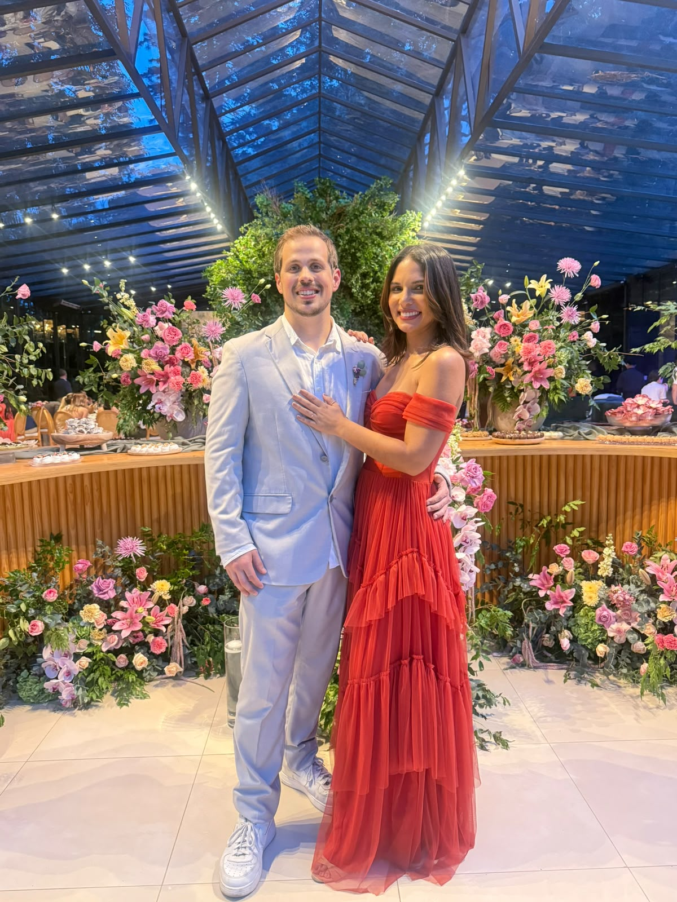
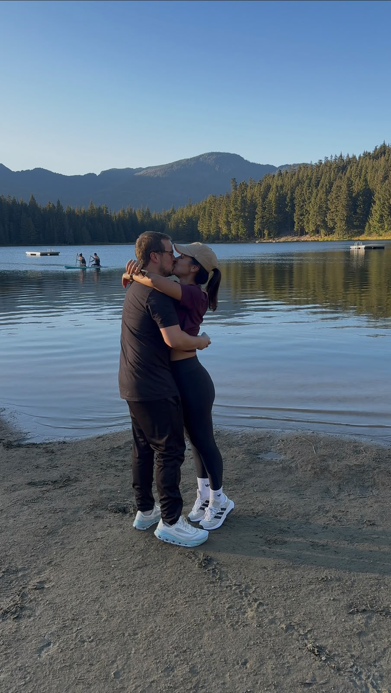

Mariana e João se encontraram no final de 2024, daqueles encontros que a vida parece preparar em silêncio.
3
As primeiras conexões
“
Mais de cinco horas em uma única ligação
O que começou com uma simples conexão logo ganhou espaço em longas conversas, que atravessavam horas sem que percebessem o tempo passar. Foram mais de cinco horas em uma única ligação, entre histórias, reflexões sobre a vida e até conversas sobre psicanálise. Como se, antes mesmo do primeiro encontro, já estivessem descobrindo um no outro um lugar de acolhimento e familiaridade.
4
O primeiro encontro
“Naquele mesmo dia João a pediu em namoro.”
Quando finalmente se encontraram, foi no metrô que tudo começou a ganhar forma. Entre um beijo roubado, sorrisos e conversas que fluíam naturalmente, nasceu a certeza de que havia algo especial ali. E, como se já soubesse um pouco do futuro que os esperava, naquele mesmo dia João a pediu em namoro e falou sobre tudo de bonito que ainda viveriam juntos.
5
A construção do amor

Desde então, foram descobrindo que o amor também mora nos detalhes: na parceria de todos os dias, na cumplicidade dos olhares, nas diferenças que se completam e na leveza de poder ser exatamente quem se é. Entre uma personalidade metódica e outra sempre pronta para uma piada, construíram um jeito só deles de caminhar juntos, tornando a vida mais leve, os dias mais felizes e os sonhos ainda maiores.
6
Uma história que continua
Talvez o mais bonito dessa história seja que, desde o início, os dois souberam que queriam construir algo que fosse além do agora. Um amor feito de escolhas, cuidado, respeito e da vontade genuína de compartilhar a vida.
Hoje, celebram o caminho que os trouxe até aqui e a felicidade de saber que ainda há tanto por viver. Afinal, algumas histórias começam por acaso, mas se tornam destino a cada escolha de permanecer.
7
O pedido de casamento

E esta é apenas a primeira página de tudo o que ainda escreverão juntos.